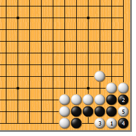
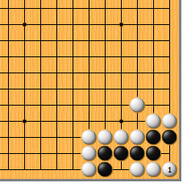
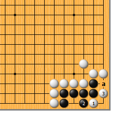
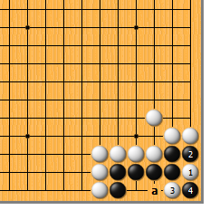
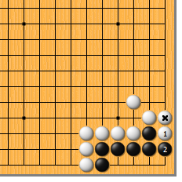

|  |  | |
| 图1 白1靠是好棋。黑2挡时，白3长又是要点，黑4只好扑，白5提成劫。白3如急于在5位扑劫，黑4位提，结果成缓一气劫，白不利。 | 图2 前图黑4如脱先，白1长，黑成盘角曲四。棋谚云：“盘角曲四，劫尽棋亡”，指的就是这种情况。
| |
|  |  | |
| 图3 白1时，黑2挡大随手。白3扳，黑由于气紧不能在a位遮断，顿死！
| 图4 白1这边靠，虽也能成劫，却不能令人满意。黑2遮断，白3扳，成黑先提劫。这还不说，白劫胜后，还要a位爬继续打劫，结果是缓一气劫，白失败。
| |
|  | 您的高见 | |
图5 还有更糟的，就是白1的冲。黑2挡，活得干干净净。白*子等于没有！ |